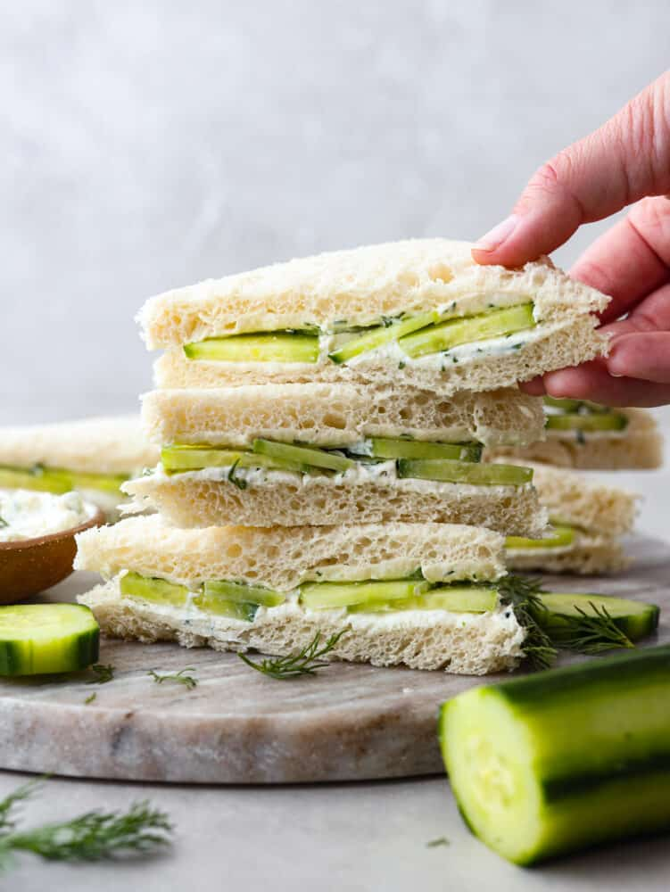

Cucumber Sandoooo

Description
Welcome young hooman WELCOME I can't wait to break your image of what is truly the most difficult of sandwiches to make!
Don't make me say it twice, this will be the most difficult test of your life... THE CUCUMBER SANDOOOOOO!
Ingredients
- Cucumber
- Sandwich Slices
- Big Dill
- Yogurt
Steps
- Cut off sides of bread and open them up just like I open... a can of tuna... with your hands.
- Cut the cucumber like how I cut...everything else... with a knife.
- Place a helpful smudge of yogurt onto each slice and top it with your beautifully cut cucumbers just like I topped your...head full of this useful information.
- Place a handful of the Big Dill on top and sandwich both sides. Press it like I press...two perfectly normal slices of bread together and squeeze.
- Serve with a knife and fock... I mean fork.
And there you have it a CUCUMBER SANDO!